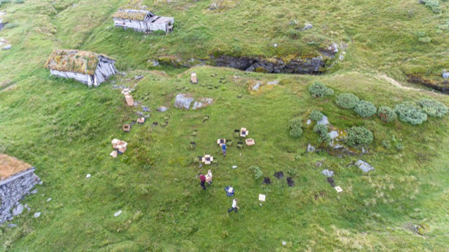

International transplant experiment network
We connect research groups running coordinated transplant and common-garden experiments across mountains and regions. Shared protocols and harmonised data help us compare how plant communities respond to warming, shifts in growing season, and dispersal across the Northern Hemisphere and beyond.
Use the menu above for background on the consortium, publications, how to submit data as a member, and how to reach the coordinating team.
